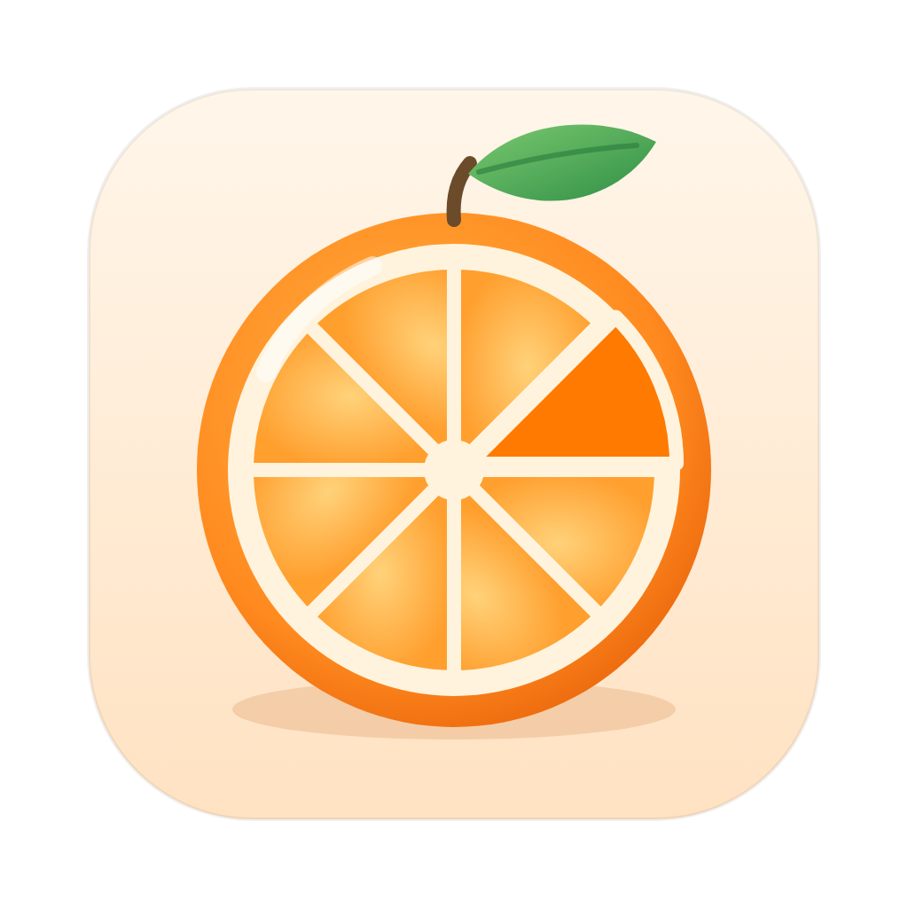

Converti e modifica qualsiasi file sul Mac. Tutto resta sul tuo computer, niente viene caricato online.
| Trascina un file tenendo ⇧ | Si apre la ruota dei formati: rilascia il file sul formato che vuoi. |
| ⇧ + ⌥ | Ruota degli strumenti: comprimi, taglia, ritaglia, annota, oscura, metadati… |
| ⇧ + ⌃ | Ruota delle azioni: AirDrop, copia percorso, Terminale, sposta, file fluttuanti, ZIP. |
| Finestra dell'app | Trascina lì i file, oppure usa Scegli file…: la ruota si usa con il mouse. Tab cambia ruota, le frecce scelgono, Invio conferma, Esc chiude. |
Puoi premere i tasti anche quando stai già trascinando. Con più file insieme l'operazione vale per tutti; alcune li combinano (unisci, collage, ZIP). Il risultato viene salvato accanto all'originale, che non viene mai modificato.
JPG, PNG, HEIC, WebP, AVIF, TIFF, GIF, PDF. Editor: ritaglia, regola, annota, oscura, cornice. Comprimi, ridimensiona, rimuovi sfondo, testo dalle foto (OCR), QR, metadati.
MP4, MOV, MKV, WebM, AVI, GIF. Taglia, comprimi a una dimensione, ritaglia, oscura aree, velocità, fotogrammi, dividi, unisci, estrai l'audio.
MP3, M4A, WAV, FLAC, OGG, Opus, AIFF. Taglia, togli i silenzi, normalizza, bip, canali, riduci il rumore, visualizzazione animata come video, tag.
In immagini, TXT, Word, EPUB. Organizza le pagine trascinandole, unisci, dividi, ruota, comprimi, proteggi con password.
Word, Pages, RTF, HTML, Markdown, EPUB ↔ PDF/Word/EPUB/TXT. Excel, Numbers, CSV ↔ XLSX/CSV/PDF/JSON. Keynote e PowerPoint → PDF.
Estrai ZIP, RAR, 7z, TAR. Crea ZIP con password. Sottotitoli SRT ↔ VTT, sposta i tempi.
brew install ffmpeg.